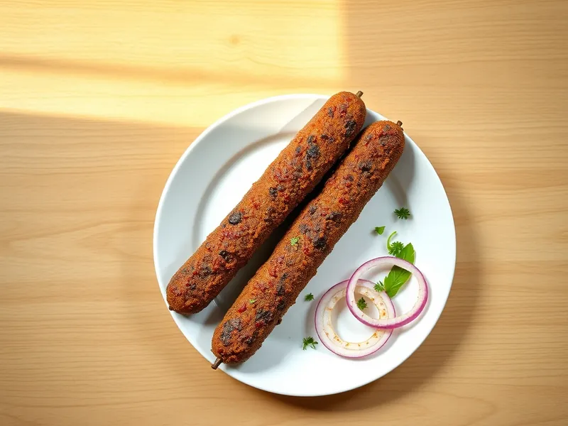

Фото: Иллюстрация ИИ, Cloudflare Workers AI
Люля-кебаб на сковороде
Продолговатые колбаски из говяжьего фарша с луком и зирой, жаренные на сковороде
25 мин3 порц.502 ккал на порциюБ 30 · Ж 39 · У 7Кавказская кухня
Открыть в приложении: порции, таймеры, список покупок
Продукты на 3 порц.
- Говяжий фарш500 г
- Лук репчатый2 шт
- Соль1 ч. л.
- Перец чёрный молотый1 щеп.
- Зира1 ч. л.
- Кинза по желанию0,5 пучка
- Растительное масло1 ст. л.
Как готовить
- Натрите лук на мелкой тёрке и хорошо отожмите сок, 4 минуты. Кинзу мелко порубите.
- Смешайте фарш с луком, кинзой, солью, перцем и зирой. Вымешивайте 3 минуты, затем 10-15 раз с силой бросьте фарш в миску: так люля не развалятся.
- Мокрыми руками сформуйте 6 колбасок толщиной 3 см и длиной 12 см. Уберите на 5 минут в морозилку, чтобы они схватились.
- Разогрейте сковороду с маслом на среднем огне. Жарьте люля 8-10 минут, поворачивая каждые 2 минуты, до румяной корочки со всех сторон.
- Сок из проколотой колбаски должен быть прозрачным. Подайте сразу с луком и зеленью.
Совет. Фарш берите жирный, не постный: в нём должно быть не меньше 20% жира, иначе люля получатся сухими и будут крошиться.